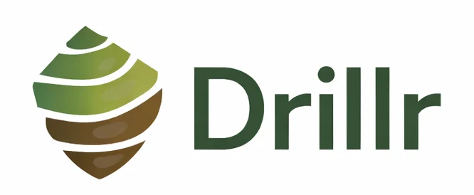
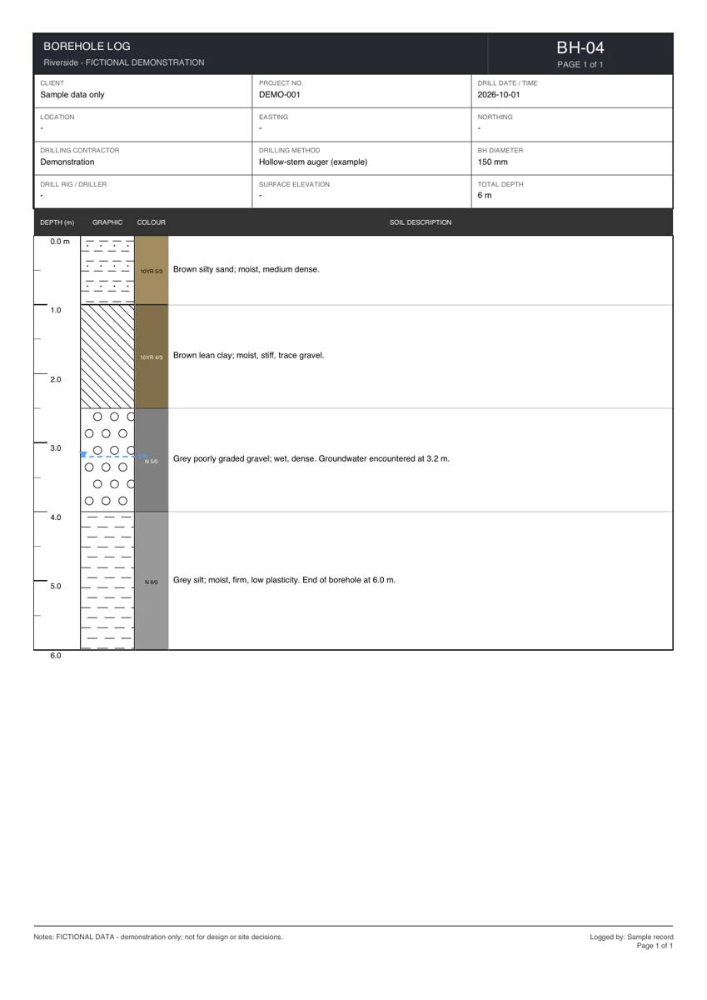
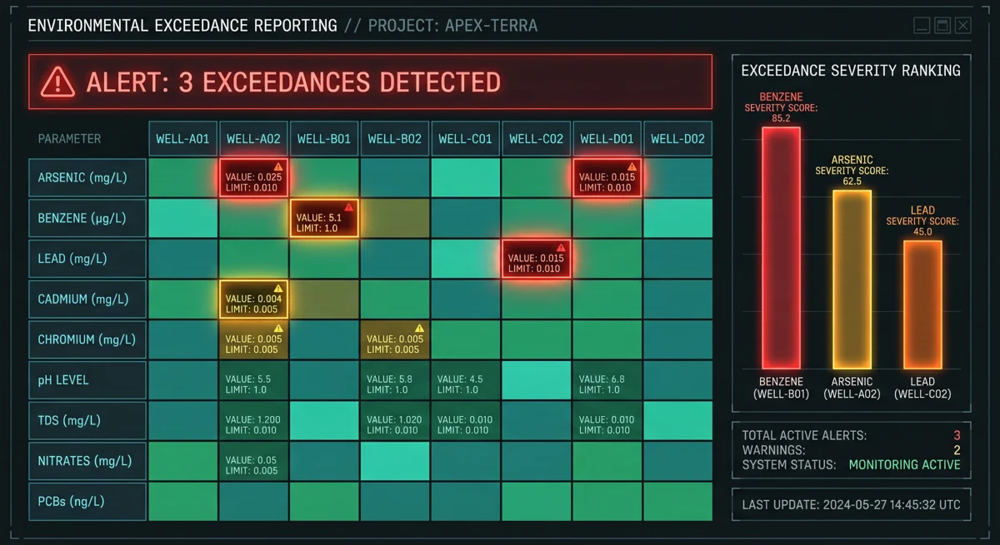
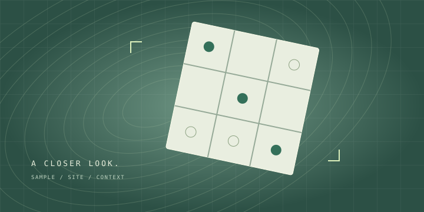

Drillr.
Field loggingIn the field. In your flow.
Capture borehole logs where the work happens, even when the signal doesn’t.
- Offline field logging
- Voice capture; online interpretation
- PDF, GRYD, Excel & CSV exports
BUILT FOR THE FIELD. AND WHAT COMES NEXT.
Less friction. More fieldwork.
Explore our tools for environmental teams, from the first sample to the final insight.


In the field. In your flow.
Capture borehole logs where the work happens, even when the signal doesn’t.

Clarity, inside your workbook.
Turn environmental data into a clearer picture, without leaving Excel.

CONNECT / 03Concept illustrationConnect the next handoff.
Explore environmental sample logistics, from your field site to the next handoff.
From investigation to report.
A report-generation agent for Phase I and Phase II environmental site assessments.
GOOD SOFTWARE STARTS WITH A CONVERSATION.